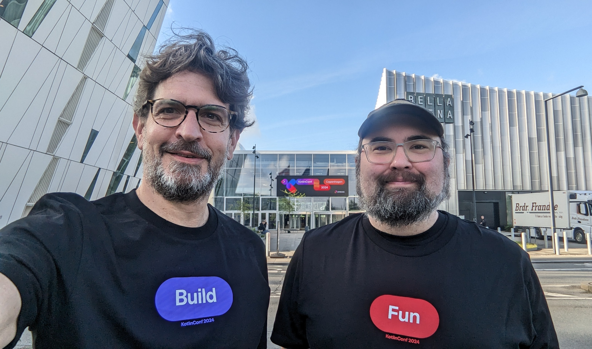
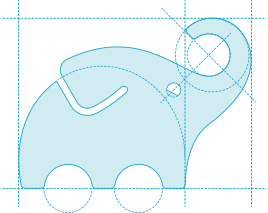

​
speaker {
name = "Paul Merlin"
company = "Gradle"
joined = 2015
currently = "Declarative Gradle"
previously = "Performance, Kotlin DSL, Configuration Cache"
github = "eskatos"
mastodon = "@eskatos@mastodon.social"
}
​Developer-first Gradle builds
Sterling Greene & Paul Merlin
Agenda
- Challenges üî•
Maintenance and understanding
- Developer first builds 💪
Vision and current state
- Demos 🎛
Don’t say it, declare it
- What’s next? 🔮
A peak into the future
Who are we?
🧑💻 🧑💻

|
Gradle
Since 2008, our mission is to accelerate developer productivity.
 |
Apache licenced sofware build tool
With 50M+ monthly downloads and one of the top 20 popular open source projects according to TechCrunch.
Develocity, commercial product, is the first Developer Productivity Engineering (DPE) integrated solution.
Gradle | Android | Maven | Bazel | Scala |
Build Scan®
A permanent record of what happens during a build.
Developer Productivity Engineering
DPE is an emerging software practice that relies on acceleration technologies and data analysis to improve developer productivity.

NEW: DPE University üéì
Free courses at dpeuniversity.gradle.com
6 Gradle courses - from Beginner to Advanced levels
More courses on Maven, Develocity etc…
Challenges 🔥
Gradle is flexible and extensible
Drawbacks
Challenges 🔥
Gradle is flexible and extensible
Drawbacks
Build scripts speak Gradle and not your domain.
Build scripts can be a mess.
Tooling can only help so much.
Challenges - Jeg taler Gradle
build.gradle.kts
plugins {
java
}
repositories {
mavenCentral()
}
dependencies {
testImplementation(libs.junit.jupiter)
testRuntimeOnly("org.junit.platform:junit-platform-launcher")
api(libs.commons.math3)
implementation(libs.guava)
}
tasks.named<Test>("test") {
useJUnitPlatform()
}Challenges - ☢
build.gradle.kts
plugins {
id("my-conventions")
}
apply {
from("dependencies.gradle.kts")
}
tasks.named<Test>("test") {
useJUnitPlatform()
jvmArgs "-Dsamples=${projectDir.absolutePath}/samples"
}
... 500 lines ...
tasks.named<Test>("test") {
useJUnitPlatform {
includeTags("Fast")
}
}Challenges - Gauntlet for toolability
build.gradle.kts
android {
namespace = "com.example.${project.name}"
}
dependencies {
testImplementation(libs.junit.jupiter)
testRuntimeOnly("org.junit.platform:junit-platform-launcher")
api(libs.commons.math3)
if (!buildingForJava17()) {
implementation(libs.java17CompatibilityShim)
}
implementation(libs.guava)
listOf("foo", "bar").forEach { name ->
implementation("org:${name}:1.0")
}
}
fun buildingForJava17() = JavaVersion.current() == JavaVersion.VERSION_17Questions üñêÔ∏è
Who has needed a flexible and extensible build system?
Who has seen a complex build?
Overcoming challenges
üí™
Overcoming challenges - Definitions
Software Definition
What needs to be built
Kind of software, languages, target platforms
Dependencies, toolchains, quality checks etc…
Build Logic
How the software will be built
Adds new capabilities, integrate tools
Supplies convention to the software definition
Overcoming challenges - Recommendations
Gradle can look declarative
Keep build logic in plugins
Give your convention plugins meaningful names
Keep your build scripts simple - condition and loop free
Overcoming challenges - 🎉
build.gradle.kts
plugins {
id("backend-library-conventions")
}
dependencies {
api(libs.commons.math3)
implementation(libs.guava)
}But this might not be enough.
Developer-first builds 🎛
Vision
Developer-first builds - Vision
Elegant and extensible declarative build language that allows developers to describe any kind of software in a clear and understandable way.
Extensible, flexible ✅
Declarative üòû
Clear and understandable üò´
Software Developers & Build Engineers
Software Developers - Majority in most teams
Improve software by shipping features, fixing bugs …
Build Engineers - Frequent in larger teams
Maintain the build, make developers productive
üé© ‚Üî üߢ - Frequent in smaller teams
Who’s the Gradle expert?
Software Definition vs Build Logic
Software Definition - What needs to be built
Meant to be read and modified by Software Developers
Resides in settings and projects definitions
Build Logic - How the software will be built
Meant to be read and modified by Build Engineers
Resides in plugins (local or external)
Developer-first builds - Tactical goals
Separate software definition and build logic
with a declarative DSLMatch the software definition to the software domain
Excellent Tooling and IDE Integration
Developer-first builds 🎛
Current state
Developer-first builds - Teams
We work on this together ü§ù
Multiple teams at Gradle (DSL, Software, IDE)
Android Studio team at Google
IntelliJ, Kotlin & Amper teams at JetBrains
Developer-first builds - Disclaimers
These are experiments.
Prototypes require a Gradle nightly.
IDE features require an Android Studio nightly.
Prototypes are changing all the time and are not ready for production use.
Developer-first builds - Declarative Configuration Language
Purely declarative
Small subset of the Kotlin language
Fast and resilient parser
Schemas & Documents
Developer-first builds - Tooling
Get projects schemas via Gradle’s Tooling API
After build settings are evaluated
Before configuring any project
Load documents for project definitions
Validate using the schema
DOM-like API
This is data!
JSON Serialization
Developer-first builds - Performance
./gradlew assembleCurrent prototypes - Software definition
Software types for Kotlin (KMP), JVM (Kotlin, Java) & Android
Software type is a high level model for the ecosystem
Wraps around existing plugins
Limited configurability just to explore/experiment
No plugin application in project DCL files
Current prototypes - Reusable conventions
Reusable conventions support sharing common configuration
Properties
Dependencies
Declared at the top-level settings DCL file
Current prototypes - Software types - Demo
settings.gradle.dcl
conventions {
kotlinJvmLibrary {
javaVersion = 21
}
}build.gradle.dcl
kotlinJvmLibrary {
// javaVersion comes from convention
dependencies {
api(project(":core:common"))
}
}Demo
Questions üñêÔ∏è
Who has tried to automate changing the build definition?
Who would like to clicky-click in a UI to understand a build and change it?
What’s next? 🔮
A peak into the future
What’s next? - Mutations / Refactorings
Gradle guided changes available from tooling and command-line
Integrated with IDE workflow (preview/diff, undo)
Provided out of the box by Gradle or registered by plugins
What’s next? - Mutations / Refactorings
Examples
Upgrade an external dependency
Add Compose to this project
Update Gradle from 9.0 → 9.1
Refactor this project to use non-deprecated properties
What’s next? - Quick and resilient IDE sync
Progressively provide more context
instead of a monolithic sync step.Avoid slow recompilation of build scripts when build logic changes.
Reparsing declarative files is fast.Errors in a declarative file don’t need to be fatal to sync
Best effort: know what "kind" of project it is at least.
What’s next? - Other IDEs
We want all features to be available to most IDEs
We’re working with JetBrains and Google for their IDEs
Our IDE team is exploring
LSP language server & BSP build server
plugins for both Eclipse/Buildship and Visual Studio Code
LSP & BSP should allow to add support in many other IDEs
What’s next? - Defining new Software types
Multiple conventions for the same software type
Restricted configurability for a software type
Entirely new software types/ecosystems
What’s next? - Multiple Software type conventions
For example, a build with two different KMP libraries.
settings.gradle.dcl
softwareTypes {
legacyLibrary {
...
}
nextGenerationLibrary {
compose {
...
}
}
}What’s next? - Software type conventions
Some reusable conventions cross software type boundaries.
For example, Compose can be used by KMP or Android.
settings.gradle.dcl
conventions {
compose {
kotlinCompilerExtensionVersion = "1.5.12"
}
}
softwareTypes {
kmpLibrary {
compose = conventions.compose
}
androidLibrary {
compose = conventions.compose
}
}Where do we want to go?
üöÄ
Where do we want to go? üöÄ
Elegant and extensible declarative build language that allows developers to describe any kind of software in a clear and understandable way.
and more …
Pluggable mutations/refactorings
Excellent IDE support
Transition
You can mix imperative and declarative in a build
Gradle imperative DSLs don’t go away
Software-types will be usable from imperative DSLs
We are exploring ways and tooling for incremental migration
Roadmap - Highly speculative
First EAP this summer
Demonstrating what we just talked about
Early feedback from the community
2024-H2
More EAPs towards the end of the year
More features
Addressing collected feedback
Further feedback from the community
Call to action
üôå
We need your help and feedback üôå
Visit declarative.gradle.org site
Explore gradle/declarative-gradle repository
Join Gradle’s Community Slack
#declarative-gradleShare your thoughts and use cases with us
Thank you!
Don’t forget to vote!
Come talk with us at our booth üêò
speaker {
name = "Sterling Greene"
company = "Gradle"
joined = 2014
currently = "Declarative Gradle"
previously = "JVM, Core, Native, Build Cache"
github = "big-guy"
x = "@argfile"
}speaker {
name = "Paul Merlin"
company = "Gradle"
joined = 2015
currently = "Declarative Gradle"
previously = "Performance, Kotlin DSL, Configuration Cache"
github = "eskatos"
mastodon = "@eskatos@mastodon.social"
}